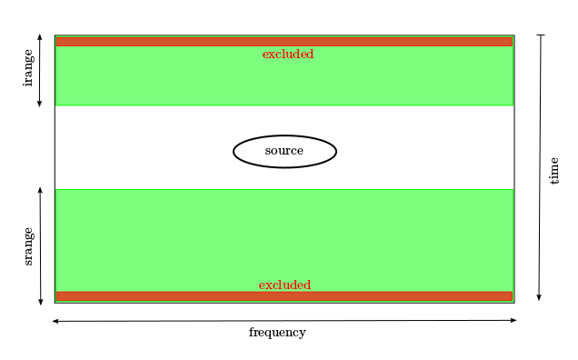

Text user’s interface¶
The text user’s interface can be used with any interactive python interpreter.
Peliminary steps¶
Importing the module¶
import dw.core.data_def as dw
This is the same module of DW, and it will import also the text mode capabilities of BPC.
Instantiating a BPC class¶
bpc = dw.DWObs()
This will instantiate a BCP data object.
DWObs is a class with the following attributes:
dir_name is the directory name
files_type is the extension of the files in the direcory
dir_datasets is a list of DW object DWData()
feeds is a list of feeds
sections is a list of sections
polars is a list of polarizations
dssel is the current selection of feed, section and polarization
Opening data¶
Opening an observation directory¶
bpc.open_dir(dirname, [filestype])
dirname is a string containing the path to the opening directory.
filestype is a string denoting the fileype of the files in the observation directory. Current available filetypes are:
- fits: DW data format in a fits container
Opening a directory will open all the data files inside the directory as DWData() objetcs and list them in the attiribute dir_datasets.
Retrieving data¶
Getting the median of one or multiple datasets¶
bcp.get_median_data(ldataset, section, pol, lrangei, lranges, lexcluded)
ldatasets is a N-list of indices of the wanted datasets
section is the index of the working section (from 0)
pol is the index of the working polarization (L=0, R=1, Q=2, U=3)
lrangei is a N-list of values of spatial sample to use at the begin for the median computation (for cross-scan and map observation types). A value equal to 0 means to use all available samples.
lranges is a N-list of values of spatial sample to use at the end for the median computation (for cross-scan and map observation types). A value equal to 0 means to use all available samples.
lexcluded is a N-list of values to exclute at the begin and at the end
Returns a list of two np-arrays [x, y].
This function has been designed to be used both to obtain the median of the time samples of a single file, and to obtain the median of several files concatenated.
To build the median are needed, as well as section and polarization, three values for each file. They are provided by the lists lrangei, lranges, lexcluded.
{kind=link}
The first two parameters set ranges of temporal samples at the begining and at the end of the subscan (green areas), and the third exclude a number of samples at the begining and at the end (red areas).
For example if we set:
- irange = 100
- srange = 200
- excluded = 3
to compute the median we will use the first 100 and the last 200 samples, but excluding the fisrt and the last 3. So this parameters are useful only in the case of an OTF scan.
After the median computation feed, section and polarization values are saved as current working dataset in the dssel attribute.
Getting a preflag¶
bcp.get_flag_curve(file_name, section)
file_name is the path of the file in which there are the flag data section is the section in use
Return a nparray of ones in which the flagged values are setted to zero.
This function is useful if an RFI is present in every data file and therefore can not be eliminated by choosing the “clean” data.
The result can be used as a weight for the fit funcion.
Getting the fit of datas¶
bcp.get_fit(fit_type, data, order, smooth, degree, begin, end, weight)
fit_type is the type of the fit computation. Aviable values are:
- spline
- chebyshev
data is a list of two nparray [x, y]
order is the order of the spline from 1 to 5 (default = 3, cubic spline)
smooth is a positive smoothing factor used to choose the number of knots. Number of knots will be increased until the smoothing condition is satisfied:
where y are the data, spl the spline funcions and w the weights.
degree is the degree of the chebyshev fitting
begin is the begin of the range of the frequency samples in which the fit is computed.
end is the end of the range of the frequency samples in which the fit is computed.
Returns a list of two nparrays [x,y]
This function compute the fit of the data using the specified fit type.
The order and smooth parameters are meaningful only if fit_type is “spline” and are ignored otherwise. order specifies the order of the spline functions and smooth determines how many nodes there are used (the bigger is smooth, the smaller is the number of the nodes).
The degree parameter, instead, is used only if fit_type is “chebyshev” and set the degree of the chebyshev polynomials.
begin and end parameters determine the range (in frequency samples) in which the fit is computed.
weight is a optional nparray which is used as weights in the fit computation.
Save an apply data¶
Functions to generate and update a correction file and to apply it to the observation files, generating tables of corrected data.
Generate and update the correction file¶
bcp.fitfile(file_name, fit)
namefile is the path of the new file
fit are the fit data
This function create or, if exists, update the file containing the data of the correction curve and a list of the files of the observation.
The correction curve is the fit curve normalized at peak and with value -1 (“diasabled”) on the samples outside the fit range.
Apply the correction to a set of files¶
bcp.applycorr(file_name, filelist)
namefile is the path of the correction file filelist is a list of path
The function applycorr apply the corrections found in the file file_name to the raw data in each file of the observation, if filelist is not specified, or in the files given in the filelist parameter; and save the new data in a table named “CORR DATA TABLE”.
The operation is a division of the raw data for the normalized fit curve, and where the latter is “disabled” (-1), it put the data to zero.
This table is recognized by DW and can be used for the rfi flagging operations.
Usage Example¶
We will now describe an example of tipical usage.
The first step is to instantiate the BPC class and to open the direcory:
import dw.core.data_def as dw
bpc = dw.DWObs()
bpc.open_dir("YYYYMMDD-HHMMSS-Project-Suffix/")
we can now see the files and data in the attribute dir_datasets. For example, if we want the title of the files in the form “Scan#.Subscan#” we can write:
for f in bpc.dir_datasets:
print f.title
To evalutate the median of a dataset we must import some plotting tools. For example for the median of the third file, feed 0, section 1, polarization R, and using all the time sample, we can do:
from matplotlib import pyplot as plt
med = bpc.get_median_data([2], 0, 1, 1, [0], [0], [0])
plt.plot(med[0], med[1])
plt.show()
Evalutated the files to use (for example 2, 4, 5, 7), we can now generate a global median:
gmed = bpc.get_median_data([2, 4, 5, 7], 0, 1, 1, [0, 0, 0], [0, 0, 0], [0, 0, 0])
plt.plot(gmed[0], gmed[1])
plt.show()
and make the fit (for example, chebyshev of 90th degree, from the 100th to 1900th frequency sample):
fit = bcp.get_fit("chebyshev", gmed, 0, 0, 100, 100, 1900)
plt.plot(gmed[0], gmed[1], fit[0], fit[1])
plt.show()
Optionally, if an RFI can not be eliminated by choosing the “clean” files, we can select a file preflagged by DW in order to not use the affected data and compute again the fit.
flag = bcp.get_flag_curve("flagged_file.fits", 1)
flag_fit = bcp.get_fit("chebyshev", gmed, 0, 0, 100, 100, 1900, flag)
plt.plot(gmed[0], gmed[1], fit[0], fit[1], flag_fit[0], flag_fit[1])
plt.show()
Now, if the fit is acceptable, we can save the data in a file:
bpc.fitfile("correction_filename.fits", fit)
or, if flagged
bpc.fitfile("correction_filename.fits", flag_fit)
This will create the file, if it not exist, and fill the part of the table relative to the chosen dataset (feed 0, section 1 and polarization R, in this case).
When the “correction” file is filled we can apply it to all the raw data with:
bpc.applycorr("correction_filename.fits")
or to a list of files
bpc.applycorr("correction_filename.fits", [file1.fits, ..., fileN.fits])
Now, if we open any file of the observation directory with DW, we can find the new corrected datasets.